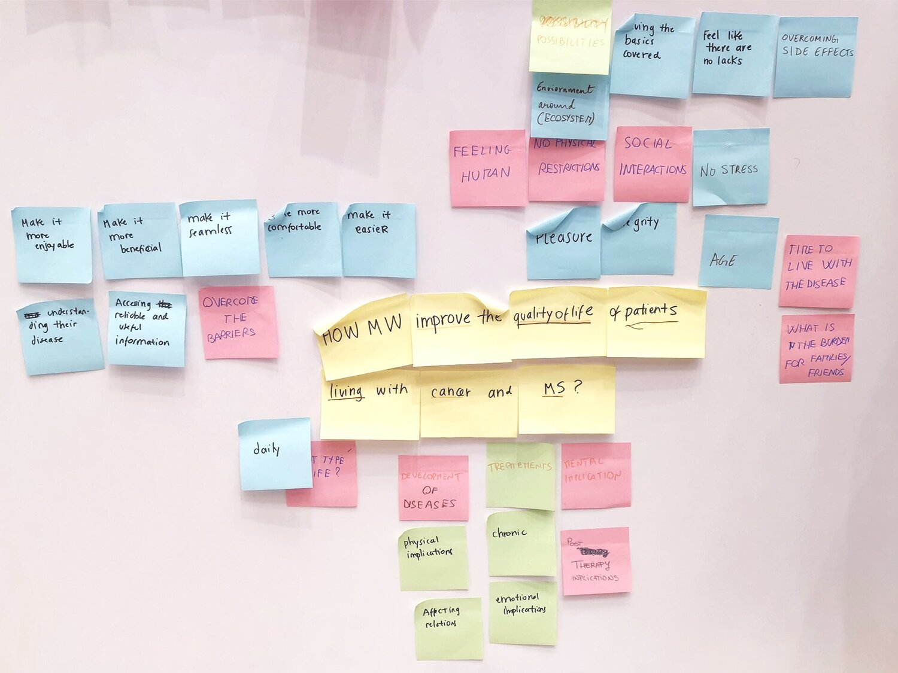

Fuel is design thinking project developed for multiple sclerosis patients under
sugar network
for design innovation.
Fuel allows patients to utilise their avaialble energy in the best way possible.
It was a challenging project for
us as we didn't had medical background but we as a team accomplished the success in the end.
The Challenge

Started with deconstruction of challenge
After research, interviews and brainstorming sessions, Our challnege emerged as....
How might we help patients spend their energy more efficiently so that they feel accomplished at the end of the day?
because MS fatigue is different and unpredicatable with no assistance available
We developed empathy map to understand patients struggles and hopes
Defining quality of life and then finding relevance with patients
How do we measure Fatigue?
By measurinng 5 physiological parameters, which we found from research papers in the field, then training an algorithm to recognise the pattern between these parameters
and fatigue, we can predict when users will feel fatigued and therefore allowing them to utilise the energy in the activities they want.
What we developed?
After developing several prototypes and feedbacks from users we came with Fuel, which we started with
training the algorithm by collecting data from 30 patients over a month through an app and using a smartwatch.